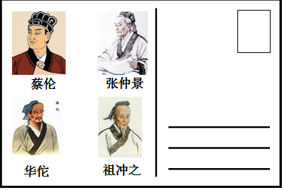
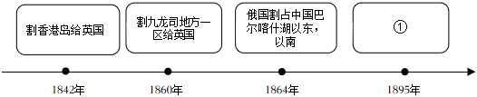
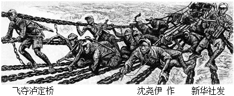

2018年北京市中考历史试题 · 选择题 第11、12、13、14、15题 · 对应解析
11．（3分）某校学生开展中国古代文明系列明信片设计活动，如图明信片设计稿的主题是（ ）

A．科学技术发达B．医学领先世界
C．手工技艺精湛D．绘画成就卓越
【分析】本题以某校学生开展中国古代文明系列明信片设计活动为切入点，考查中国古代科学技术。
【解答】明信片上的人物蔡伦（改进造纸术）、张仲景（“医圣，代表作为《伤寒杂病论》）、华佗（主要贡献为麻沸散和五禽戏）、祖冲之（将圆周率精确到小数点后面的第七位数字），都体现了中国古代科学技术的发达。
故选：A。
【点评】本题以中国古代科学技术为背景，考查学生运用所学解决问题能力。
12．（3分）如图示意图从某个角度反映了中国近代民族危机的不断加深，其中①应为（ ）

A．俄国割占外兴安岭以南、黑龙江以北
B．允许日本在通商口岸投资开设工厂
C．割辽东半岛、台湾、澎湖列岛给日本
D．允许列强驻守北京到山海关铁路沿线要地
【分析】本题以历史年代尺为切入点，考查《马关条约》的相关知识。
【解答】由前三个示例可知此题考查角度为近代不平等条约中我国被迫割让的领土。根据时间轴所示，结合所学，我们可得知1895年所对应的应为《马关条约》，符合题意要求的只有C选项。A项为英国第二次鸦片战争中俄国趁火打劫，割占我国东北地区，时间不符：B项为《马关条约》内容，但不符合割占领土的主题；D项为1901年《辛丑条约》内容。
故选：C。
【点评】注意对图片的解读，识记《马关条约》的主要内容及影响。
13．（3分）社会变化反映在人们生活的各个方面，以下是上海白渡桥平均每天通行情况表（单位：次）。材料反映出（ ）
时间 | 人力车 | 马车 | 轿子 | 自行车 | 汽车 | 有轨电车 |
1889年 | 544 | 9 | 11 | 0 | 0 | 0 |
1926年 | 14600 | 0 | 0 | 3459 | 3936 | 922 |
A．等级观念的消失B．娱乐方式的多样化
C．民族工业的发展D．交通工具的近代化
【分析】本题考查了近代社会生活变化。近代以来，随着西方的坚船利炮的到来，外来事物从四面八方滚滚而来，古老的中国发生着艰难的改变。
【解答】材料反映出的是通行情况，根据表格信息可知，自行、汽车，有轨电车等近代变通工具从无到有，开始占据重要地位：而传统出行方式如马车、轿子则数量大减。材料反映出交通工具的近代化。
故选：D。
【点评】本题属于材料型选择题，主要考查学生的阅读分析能力，解答此类必须认真阅读材料，结合所学知识提炼材料中的重要信息和观点。
14．（3分）某校排练了一部历史剧，其中一句台词是：请“民主”和“科学”两位先生来救治中国政治上、道德上、思想上的一切黑暗。据此判断在这部历史剧中表现了（ ）
A．太平天国运动B．辛亥革命
C．新文化运动D．北伐战争
【分析】本题主要考查新文化运动的相关史实。新文化运动是我国历史上一次空前的思想大解放运动。
【解答】1915年，陈独秀、李大钊、胡适、鲁迅等高举“民主”与“科学”两面大旗，以《新青年》为主要阵地，掀起了空前的思想大解放运动﹣﹣新文化运动，新文化运动是我国历史上一次空前的思想大解放运动。它启发着人们追求民主和科学，探索救国救民的真理，为马克思主义在中国的传播创造了条件。但它有对东西方文化绝对否定绝对肯定的偏向。民主与科学是新文化运动中高举的两面大旗。据关键词“民主”、“科学”两位先生可知，答案为C选项，其它选项均未直接涉及。
故选：C。
【点评】本题主要考查学生的识记能力以及分析问题的能力。理解并识记新文化运动的相关史实。
15．（3分）如图反映了红军长征中的一个重大历史事件。《长征组歌》中描述这个历史事件的歌词是（ ）

A．遵义会议放光辉，全党全军齐欢庆
B．昼夜兼程二百四，猛打穷追夺泸定
C．雪山低头迎远客，草毯泥毡扎营盘
D．陕甘军民传喜讯，征师胜利到吴起
【分析】本题以《长征组歌》为切入点，考查的是红军长征的相关知识点。
【解答】考察红长征的过程。从下图可以看到红车战士们正匍匐在铁索中前行，身下是湍急的河流。结合所学，可联想至。红军长征中的“飞夺泸定桥”，与此相关的近选项只有B“猛打穷追夺泸定”符合，故答案为B选项。
故选：B。
【点评】本题考查学生对历史史实的准确识记和理解能力。注意掌握红军长征的有关内容。